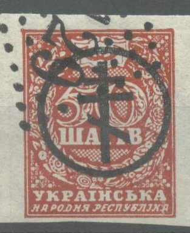
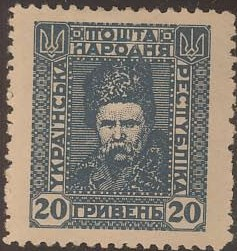
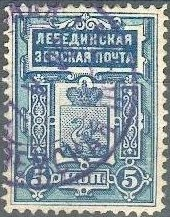
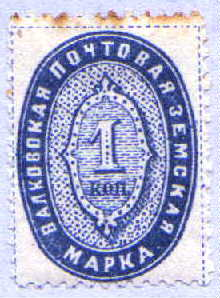
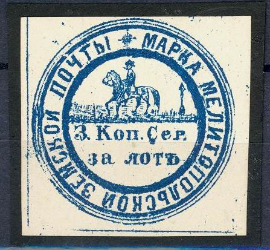
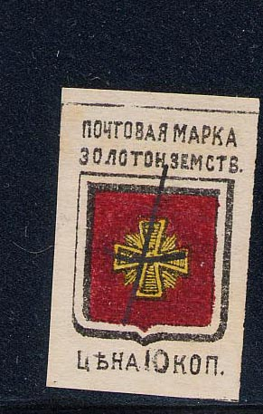

Return To Catalogue - Stamps of Russia overprinted with arms of Ukraine - Russia Overview - Western Ukraine
Note: on my website many of the
pictures can not be seen! They are of course present in the
catalogue;
contact me if you want to purchase the catalogue.
10 sh brown (arms) 20 sh brown (farmer) 30 sh blue (mythical woman) 40 sh green (arms) 50 sh red (value)
These stamps were also printed on very thick paper, to be used as money, on the back there is an explanation in russian language, examples:
The 10 sh stamps was overprinted '35 k.' to be used in South Russia.
Value of the stamps |
|||
vc = very common c = common * = not so common ** = uncommon |
*** = very uncommon R = rare RR = very rare RRR = extremely rare |
||
| Value | Unused | Used | Remarks |
| Imperforate, all 'sh' values | vc | c | |
| Perforated, all 'sh' values | * | *** | Paper money |

(A bogus Western Army overprint, note the French(!) 5129 numeral
cancel)
For other forgeries with the same overprint click here.
Some other bogus 'South Russia' diagonal overprints on these
stamps
I've seen another bogus issue of a Polish eagle overprint with additional value in 'gr.'. I've seen 2 gr and 5 gr on several values and also 10 gr (overprint and surcharge in red) on several values.
20 G orange
Mostly this stamp has an underprint (wavy lines).
Value of the stamps |
|||
vc = very common c = common * = not so common ** = uncommon |
*** = very uncommon R = rare RR = very rare RRR = extremely rare |
||
| Value | Unused | Used | Remarks |
| 20 G | * | * | |



1 g black (arms) 2 g lilac (ukrain girl) 3 g orange (farm) 5 g green (cows with carriage) 10 g red 15 g brown 20 g blue 30 g brown 40 g red (kosak making music) 50 g green 60 g lilac and brown (parlament) 80 g brown and blue (ship) 100 g green and grey (momument of Vladimir the Great) 200 g brown and grey (windmill)
Value of the stamps |
|||
vc = very common c = common * = not so common ** = uncommon |
*** = very uncommon R = rare RR = very rare RRR = extremely rare |
||
| Value | Unused | Used | Remarks |
| All values | vc | - | |
(Overprint 'Kyp'epcbko-PoLboBa PowTa.' and
surcharged)
I've been told that these stamps are courier stamps(?). If anybody has more information please contact me. I have seen the values: 10 g on 40 sh, 10 g on 10 sh, 10 g on 20 sh, 10 g on 50 sh, 20 g on 10 sh, 20 g on 20 sh, 20 g on 30 sh, 20 g on 40 sh, 20 g on 50 sh, 40 g on 10 sh and 40 g on 40 sh. I have also seen an inverted overprint (see image above).
(Overprinted 'Poczta Polska' and value, issued for Kowel?)

I've been told that the above label was issued in Petlyura (or Petlura) in 1919, this stamp is of private origin (source: 'Les timbres de phantaisie' of Georges Chapier, in french).

10 + 10 k blue and black 20 + 20 k brown and yellow 90 + 30 k brown and black 150 + 50 k red and black
Value of the stamps |
|||
vc = very common c = common * = not so common ** = uncommon |
*** = very uncommon R = rare RR = very rare RRR = extremely rare |
||
| Value | Unused | Used | Remarks |
| 10 + 10 k | * | ** | |
| 20 + 20 k | * | ** | |
| 90 + 30 k | ** | *** | |
| 150 + 50 k | ** | *** | |
The following values were issued: 7500 on 100 R orange, 7500 on 250 R lilac and 22500 on 1000 R red (value: all ***).
These stamps were prepared by the Ukrainian government in exile (in Warsaw), but they never came into use.
Other values exists, for example: 1000 on 10 g red, 1500 on 10 g red, 2000 on 10 g red, 2500 on 20 g blue, 4000 on 20 g blue, 5000 on 20 g blue, 8000 on 40 g red, 10000 on 40 g red, 15000 on 40 g red, 20000 on 40 g red and 25000 on 40 g red.
(Reduced size)
I have seen the values 10s blue and green, 20 s red and blue, 50 s violet and red and 1 K brown and violet (all imperforate).
60 f red 100 f blue 200 f blue and red

10 f yellow 20 f grey 40 f green 60 f red 100 f blue and red 200 f brown and red With inscription '1945'

10 f yellow 20 f grey
Non of these stamps are common.
In the 19th century many local issues (so-called Zemstvo stamps) exist for Russia, including Ukraine. A complete listing of these stamps can be found by clicking here.
Examples of Zemstvo stamps (issued in Ukrainian towns):




Most zemstvo stamps are relatively rare.
{kind=link}
{kind=link}
{kind=link}
{kind=link}
{kind=link}